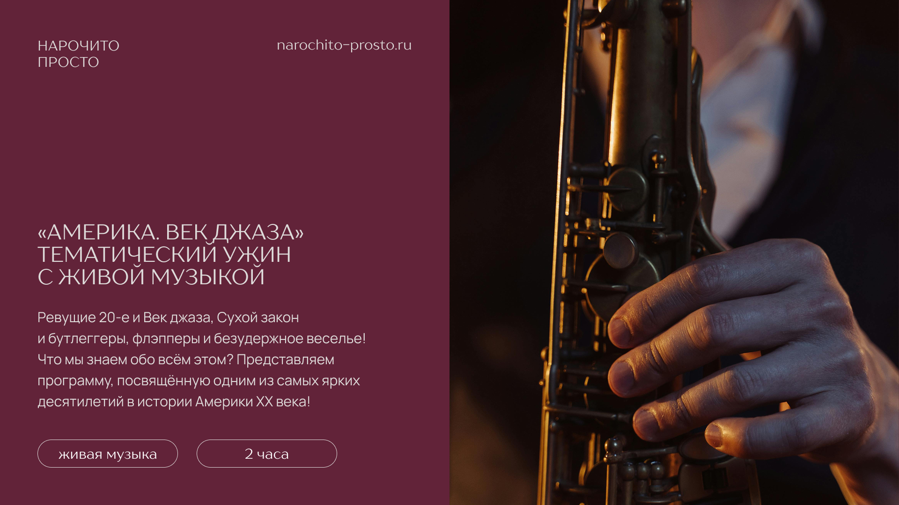
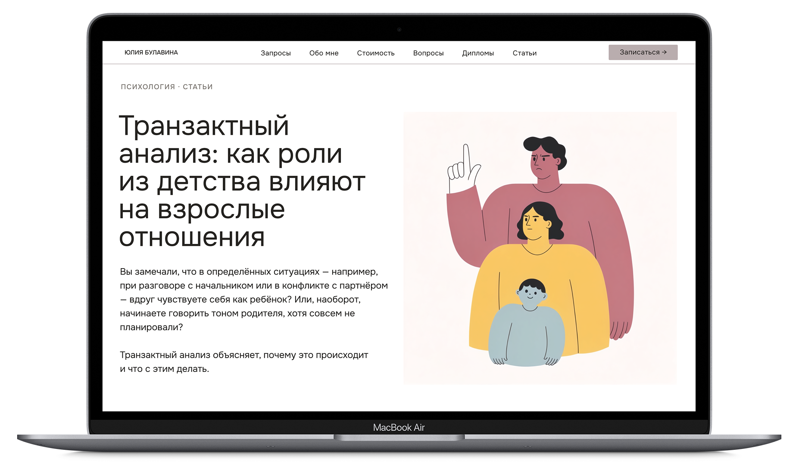
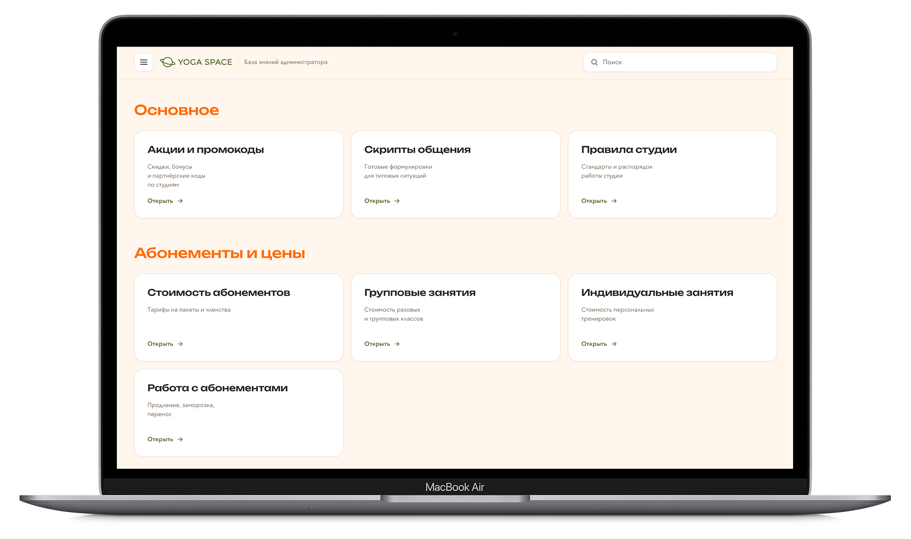

Задача
Сделать бренд видимым в ответах AI-поисковиков
Сделано
Полный GEO-аудит, техническая разметка, оптимизация Core Web Vitals — зелёные показатели по CrUX
Статус
Внедрено, количественный трекинг в разработке
За последние 4 года самостоятельно освоила разработку и техническую оптимизацию сайтов, автоматизацию процессов и GEO. Технические решения собираю с помощью AI-инструментов — от постановки задачи до работающего кода на сайте.
Видимость бренда в эпоху AI-поиска — от технической разметки до места в ответах нейросетей. Плюс всё, что нужно, чтобы сайт, боты и внутренние сервисы работали как одна система.
Инструменты, которыми пользуюсь в работе
Сделать бренд видимым в ответах AI-поисковиков
Полный GEO-аудит, техническая разметка, оптимизация Core Web Vitals — зелёные показатели по CrUX
Внедрено, количественный трекинг в разработке
Улучшить навигацию по каталогу и конверсию
Карточка товара с галереей и переключением форматов аромата
Запущено
Собрать информацию, которую чаще всего спрашивают покупатели, в понятный формат и упростить доступ к ней
Структура гида по состояниям, карточки ароматов с нотами, интенсивностью и форматами
Готово
Перестроить сайт под смену позиционирования на корпоративных клиентов: сделать информацию понятной, сократить путь до заявки и поднять дизайн до уровня проекта
Структура страниц, дизайн главной с блоками форматов и цифрами о проекте, интерактивный прототип
Прототип готов, на согласовании

Разработать дизайн коммерческих предложений и презентаций в едином стиле с новым сайтом, чтобы визуал соответствовал уровню проекта
Шаблон презентации в фирменном стиле, слайды под форматы событий, вёрстка КП
Используется в продажах

Сделать сайт видимым в AI-поиске и дать содержательный вход через блог
Аудит, руководство по копирайтингу, дизайн блога, блог-статьи под GEO, промпты для изображений, сайт переверстан
Ожидает публикации

Облегчить доступ к информации для администраторов и снизить возможное количество ошибок в коммуникации с клиентами и в ведении учёта
Дашборд собран и опубликован на GitHub Pages
Согласование с командой и сбор контента
Готова внедрять GEO
и digital-инструменты
в вашей команде